Recipes
Double Chocolate Chip Cookies

Indulge your sweet cravings with these delectable Double Chocolate Chip Cookies. A heavenly fusion of rich cocoa and velvety chocolate chips, these cookies are a true delight for chocolate lovers.
The recipe combines the perfect balance of buttery softness and crisp edges, creating a mouthwatering texture that complements the intense chocolate flavor. Whether you're a seasoned baker or a novice in the kitchen, these cookies are a simple and irresistible treat to satisfy your sweet tooth.
Ingredients
 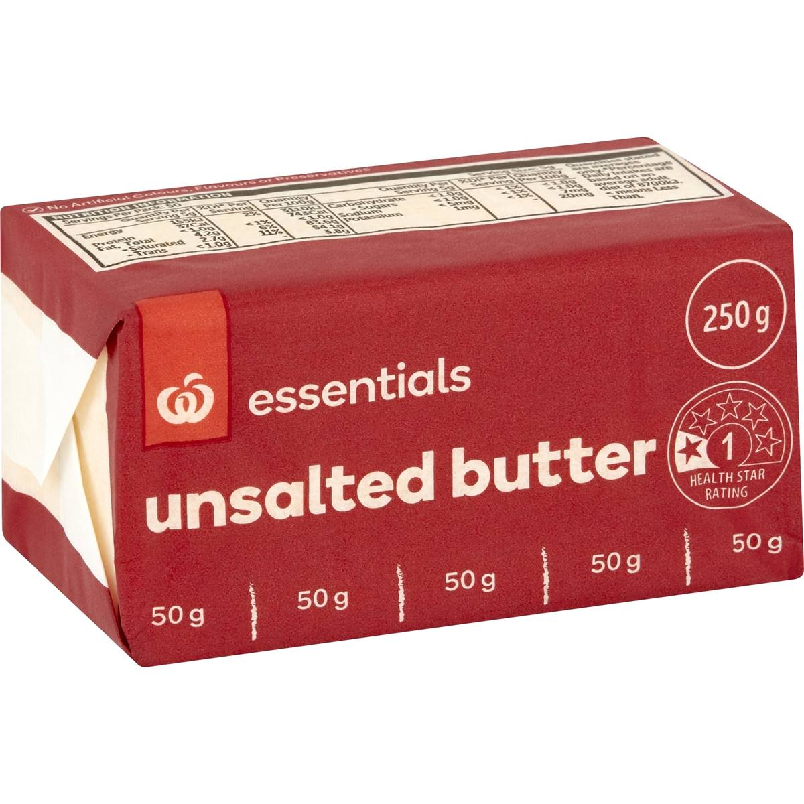
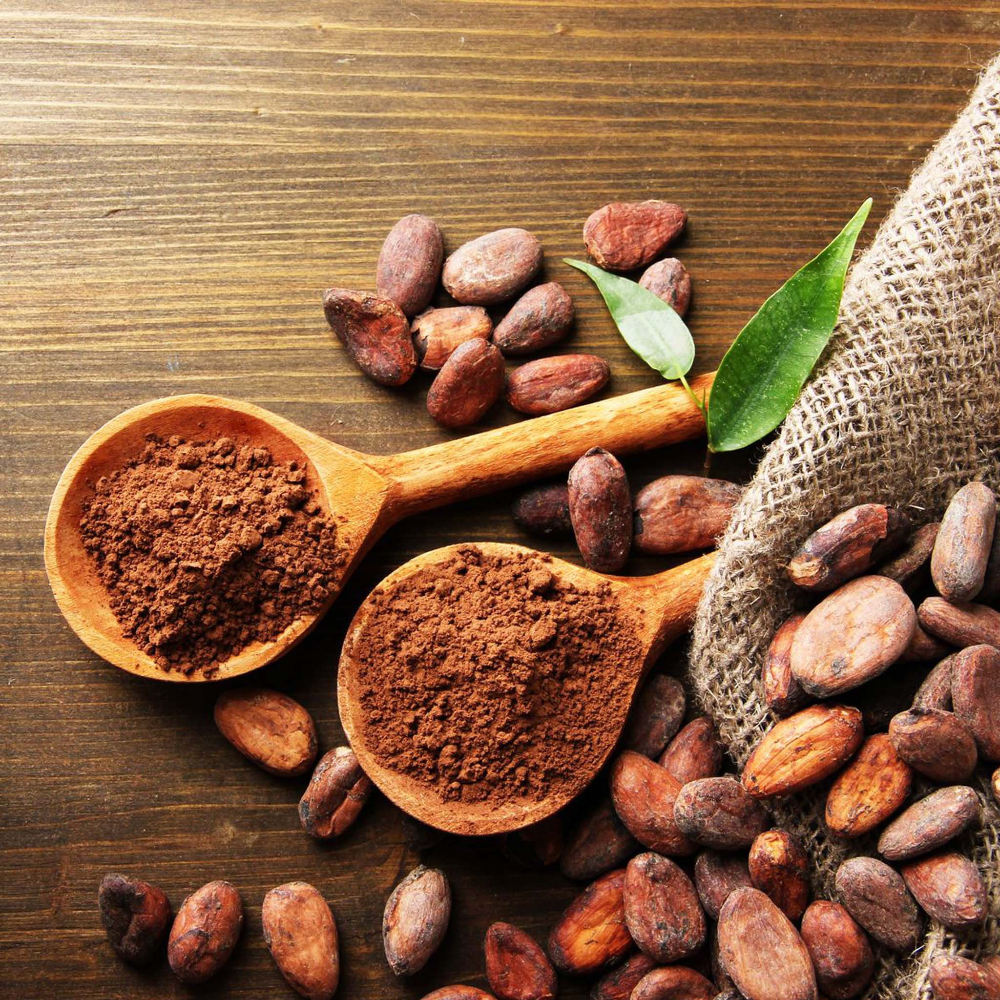
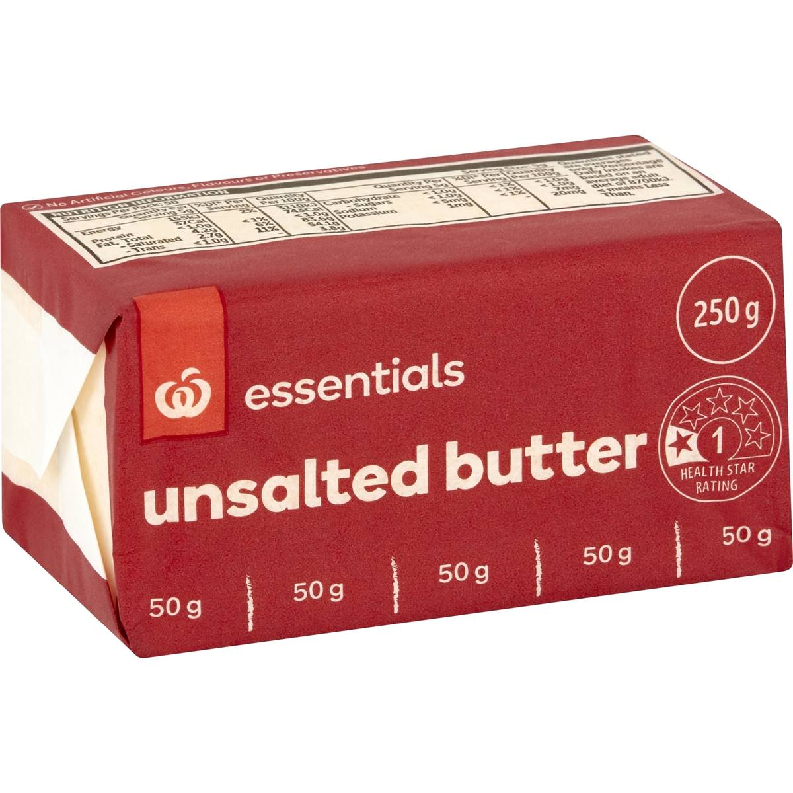
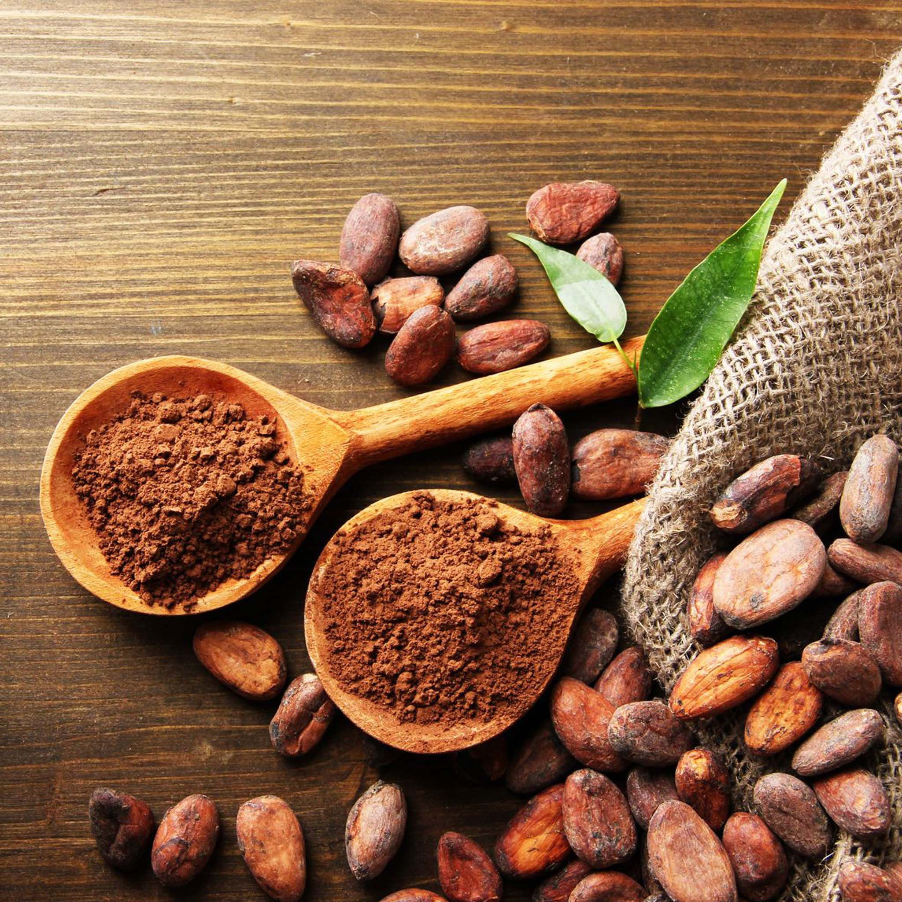
The 3 Key Ingredients
- Chocolate chips
- Unsalted Butter
- Cocoa Powder
The Recipe:
- In a large bowl, cream together butter and sugar.
- Add cocoa powder, flour, and chocolate chips. Mix until combined.
- Scoop tablespoon-sized portions of dough, roll into balls, and place on baking sheets.
- Bake for 10-12 minutes until edges are set but centers are soft.
Avacado Toast
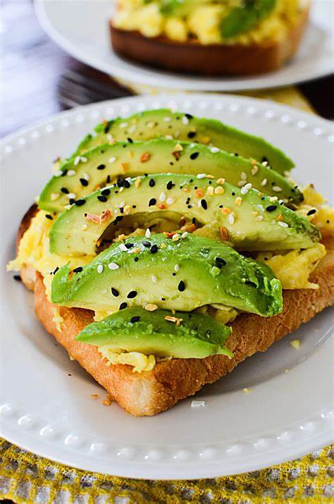Elevate your breakfast or snack time with this quick and nutritious Avocado Toast recipe. Creamy mashed avocado meets perfectly toasted bread in a harmonious blend of flavors and textures.
Get ready to savor the rich, buttery goodness of avocado paired with your favorite toppings, creating a versatile and customizable treat that can be enjoyed any time of day.
Ingredients
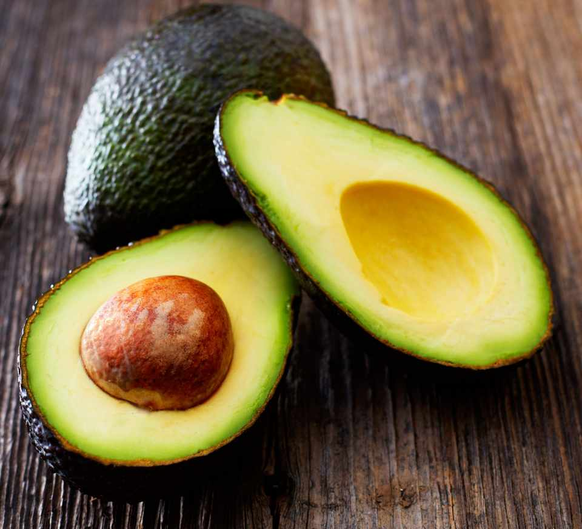 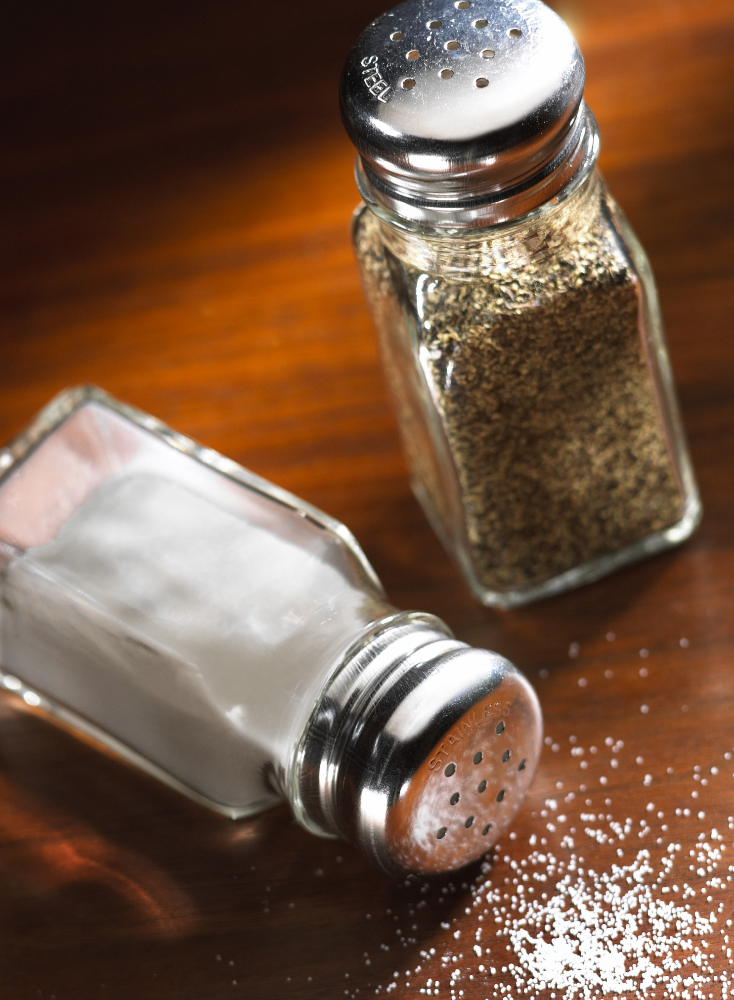
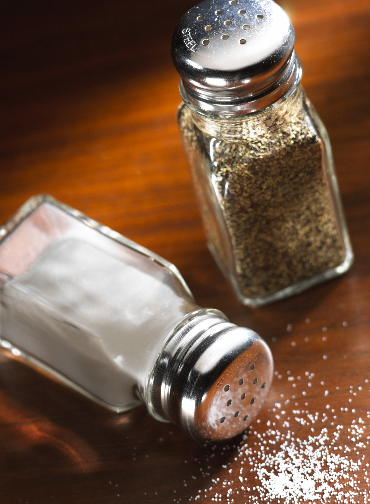
The 3 Key Ingredients
- Avacado
- Toast
- Salt and Pepper
The Recipe:
- Cut the ripe avocado in half and remove the pit.
- Use a fork to mash the avocado until it reaches your desired level of smoothness or chunkiness.
- Toast the slices of bread to your liking.
- Smear the mashed avacado onto the toast.
- Sprinkle salt and pepper to taste over the mashed avocado.
Spaghetti and Meatballs
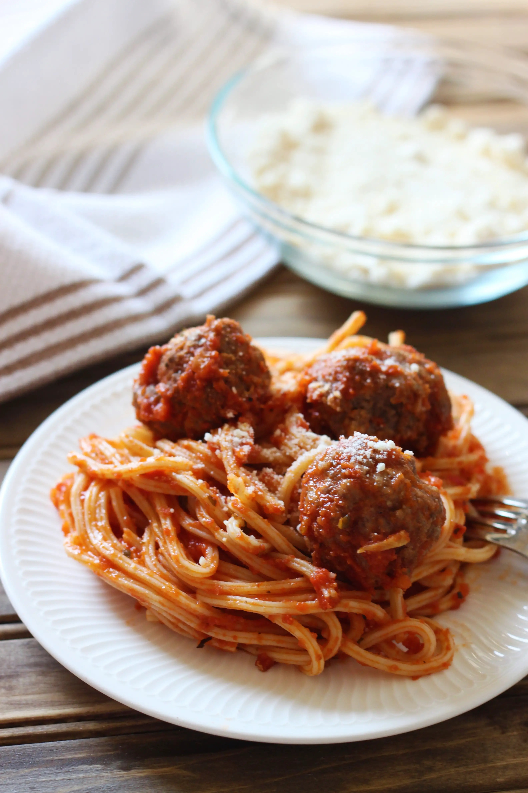Savor the simplicity of a homestyle classic with this quick and easy spaghetti and meatballs recipe. Perfect for busy days or when you're craving a comforting meal without the fuss.
Juicy meatballs mingle with a rich marinara sauce, creating a delightful harmony that blankets a bed of perfectly cooked spaghetti.
Ingredients
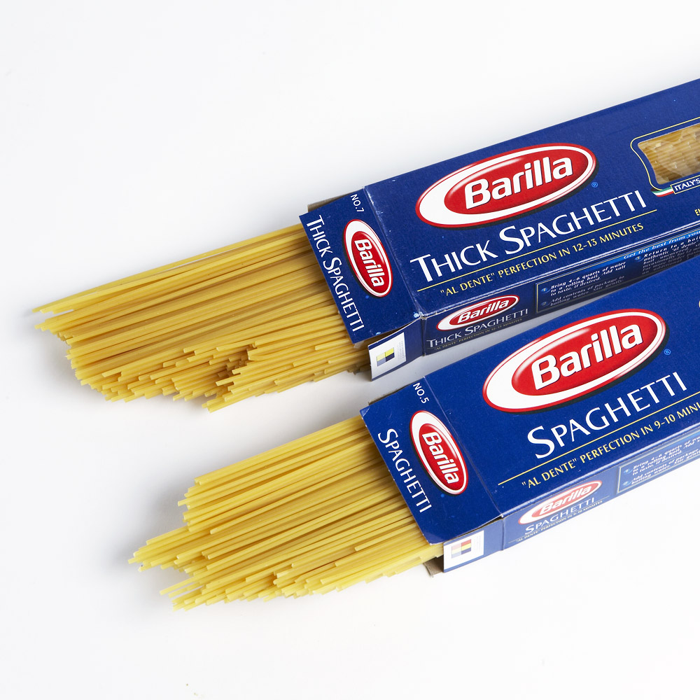 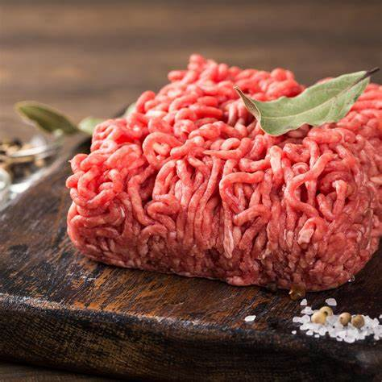 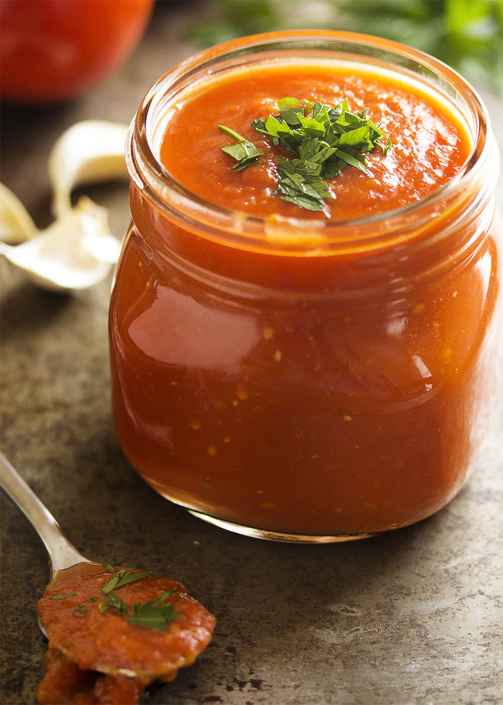The 4 Key Ingredients
- Raw Spaghetti
- Ground Beef
- Marinara Sauce
- Salt and Pepper
The Recipe:
- Roll small portions of ground beef into meatballs.
- Brown them in a skillet over medium heat until cooked through.
- Pour the marinara sauce into the skillet with the cooked meatballs. Heat together.
- Meanwhile, cook the spaghetti according to the package instructions. Drain.
- Toss the cooked spaghetti with the meatball and sauce mixture.
- Season with salt and pepper to taste.